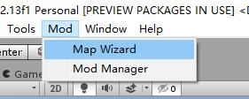
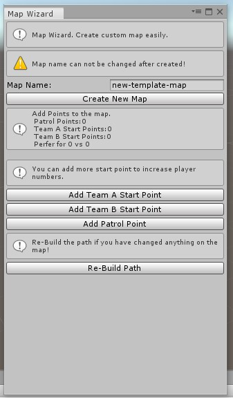
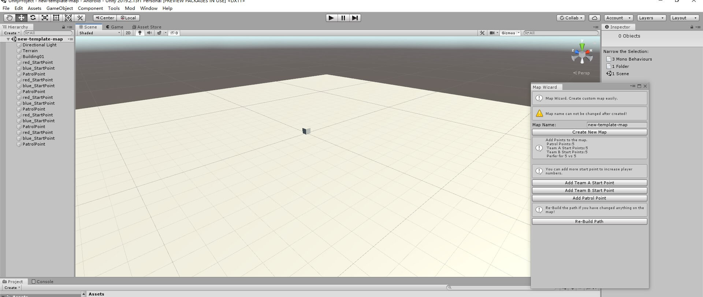
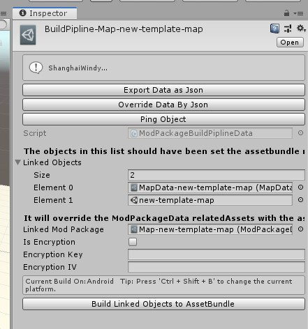
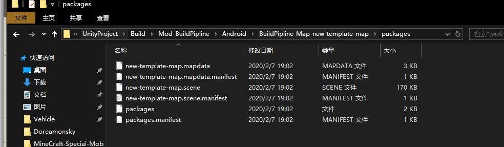
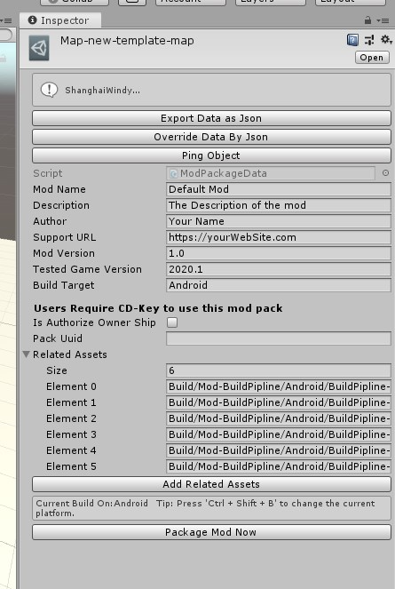
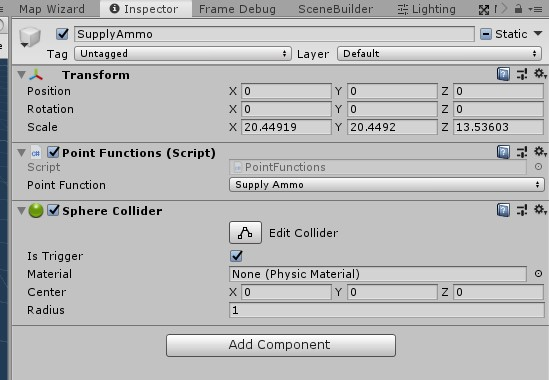

03. Map Wizard Tutorial 地图教程
The Map Wizard Tool is built for creating custom map easily. 地图创建指引工具可快速用于地图文件的创建，让你专注于地图的创建，而无需关系相关配置信息的生成。
Open the tool 打开工具
You can open this tool from this menu if you have installed the Panzer War Mod SDK correctly. 你可以在顶部菜单栏打开地图工具。 
Create the map 创建地图
Change the map name and click Create New Map. (You can keep the default map name) 修改地图名称，点击按钮 Create New Map  Then,the new map is created. It is an almost empty map. You can add buildings and terrains into it. And you have to set the tag of the buildings and terrains. You can refer to the default objects.Also,you can add points to the map. Finally,you should click re-build path if you changed something on the map. 随后，你的新地图创建了。这个是一张几乎空的地图。你可以添加建筑与地形到场景中。你可以参考一些默认物体。此外，你可以添加出生点和寻路点到地图上。最后，你如果对地图进行了修改，需要点击 Re-Build Path 按钮。
Build the assets 编译资源
You can find the BuildPipline file in the folder "ModManager". It names BuildPipline-Map-YourMapName. And click Build Linked Objects to AssetBundle 你可以在 ModManager 文件夹寻找到地图对应的 BuildPipline 文件夹。 点击 Build Linked Objects to AssetBundle 按钮打包资源。  
Package Files 打包文件
You can find the ModPackage file in the folder "ModManager". It names Map-YourMapName. Click Package Mod Now. And you can get the .modpack file.
你可以在 ModManager 文件夹寻找到地图对应的 ModPackage 文件夹。点击 Package Mod Now 按钮打包资源。 
Extra - Point function 额外 - 功能点
 You can add repair and supply point in the map. 通过增加组件和碰撞触发器方式，可以增加补给和维修功能点。